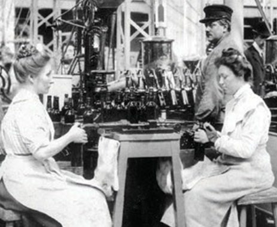
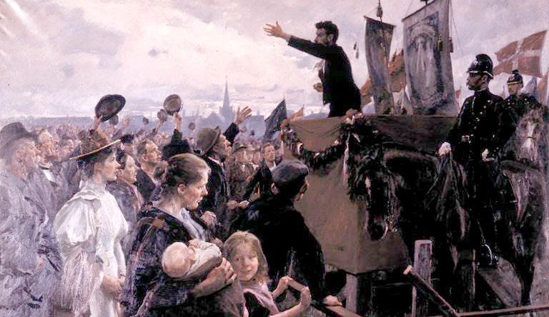
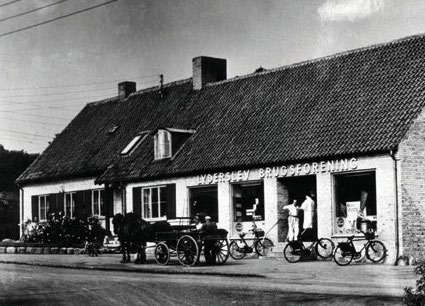
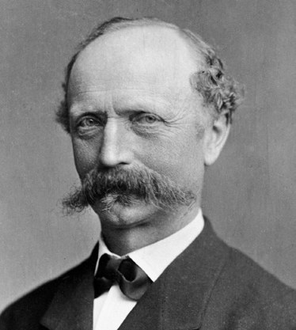
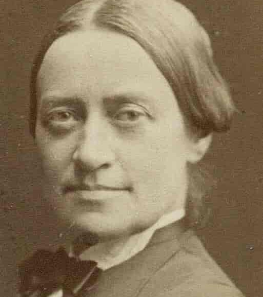
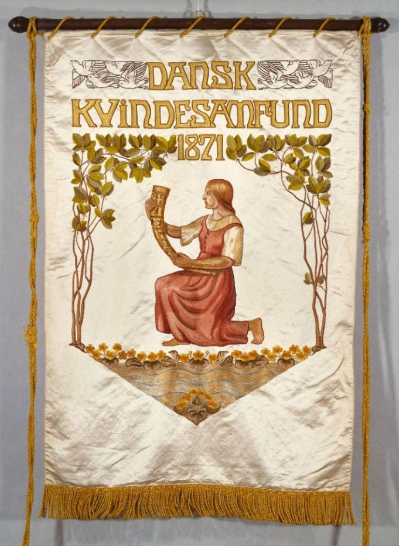

1.8 – INDUSTRIALISERINGEN OG NYE POLITISKE BEVÆGELSER (1864-1914)
sidde 27
Og Nye Politiske Bevægelser (1864-1914)
Slutningen af 1800-tallet og begyndelsen af 1900-tallet var præget af en omfattende modernisering af det danske samfund. Der kom gang i en industriel udvikling, velstanden steg, og nye politiske reformer skulle sikre en mere fri økonomi. Indenrigs politisk opstod der en markant konflikt mellem godsejerpar tiet Højre og bondepartiet Venstre, og en række nye politiske bevægelser som arbejderbevægelsen, andelsbevægelsen og kvindebevægelsen så dagens lys.
DEN FØRSTE INDUSTRIALISERING OG ARBEJDERBEVÆGELSEN
Industrialiseringen begyndte så småt i England allerede i midten af 1700-tallet. De vigtigste årsager til industrialiseringen var udviklingen af dampmaskinen, de første jernbaner i begyndelsen af 1800-tallet samt adgangen til energi i form af store kulreserver. Den første jernbane inden for Danmarks nuværende grænser åbnede i 1847 og kørte mellem København og Roskilde. Men industria liseringen slog først for alvor igennem i sidste halvdel af 1800-tallet, og først efter 2. Verdenskrig gik Danmark fra at være et landbrugssamfund til at blive et egentligt industrisamfund.
Den begyndende industriali sering fik store dele af befolk ningen til at flytte fra landet og ind til byerne for at arbejde i industrien eller med hånd værk. Dermed opstod en helt ny samfundsgruppe af arbej dere. De arbejdede ofte på de nye fabrikker eller værksteder i byen og boede i små lejligheder i store etageejendomme.Arbejde på bryggeri omkring år 1900.
Arbejde på bryggeri omkring år 1900.
Læremateriale Til Indfødsretsprøven

sidde 28
De mange arbejdere i industrien havde fælles interesser. De ville blandt andet sikre sig den højest mulige løn for arbejdet, rimelige arbejdstider og bedre sikkerhed på arbejdspladserne. De mange arbejdere begyndte at samle sig. I oktober 1871 blev den ’Den internationale Arbejderforening for Danmark’ grundlagt som en del af den internationale socialistiske bevægelse, der søgte at påvirke arbejdere i mange lande. I aviser og på løbesedler opfordrede bevægel sens ledere til strejker og demonstrationer for at kræve bedre vilkår og højere løn til arbejderne.Politisk møde i arbejderbevægelsen omkring 1870
Politisk møde i arbejderbevægelsen omkring 1870.
Arbejdsgiverne fastholdt på deres side retten til at lede og fordele arbejdet. Perioden var derfor præget af strejker og sammenstød. Det mest kendte sammenstød mellem demonstrerende arbejdere og myndighederne var Slaget på Fælleden, der fandt sted i maj 1872. Det var et stort arbejdermøde i København, som endte i kampe mellem politi og soldater på den ene side og arbejdere på den anden. Ingen blev dræbt på Fælleden, men mange blev fængslet.
Der opstod også et politisk arbejderparti, Socialdemokratiet. Det var i begyn delsen en del af arbejderbevægelsen, men blev i 1878 et selvstændigt parti. I 1884 blev de to første socialdemokrater valgt ind i Folketinget.
En langvarig strid i 1899 mellem arbejdsgivere og arbejdere endte i september samme år med en historisk aftale, Septemberforliget, mellem arbejdsmarkedets to hovedorganisationer – der i dag hedder DA (Dansk Arbejdsgiverforening) og FH (Fagbevægelsens Hovedorganisation). Med aftalen bevarede arbejdsgiverne deres ret til at lede og fordele arbejdet, og arbejderne fik ret til at organisere sig og varetage deres interesser kollektivt via fagforeninger og tillidsmænd – for eksempel forhandle løn og arbejdsvilkår eller strejke efter nærmere bestemte regler. Septemberforliget ligger stadig til grund for den måde, man laver aftaler på det danske arbejdsmarked. Den måde at aftale tingene på i Danmark kaldes ”Den Danske Model”.
Læremateriale Til Indfødsretsprøven

sidde 29
ANDELSBEVÆGELSEN
Mens industrien voksede i byerne, skete der også forandringer på landet. I midten af 1800-tallet havde Danmark eksporteret store mængder korn til udlandet. Situationen ændrede sig imidlertid i midten af 1870’erne. Nu gjorde dampskibe og jernbaner det muligt for USA og de østeuropæiske lande at eksportere billigt korn til Vesteuropa, hvilket fik kornpriserne til at falde drastisk. Derfor valgte de danske landmænd i høj grad at omlægge til animalsk produktion. Det vil sige opdrætte for eksempel kvæg og svin for at producere blandt andet smør og bacon, som hurtigt blev Danmarks klart største eksportvarer. Det vigtigste marked var Storbritannien, som alene aftog over halvdelen af den animalske fødevareeksport i perioden 1890-1914.
En del af denne succes skyldtes andelsbevægelsen, som i samme periode kom til Danmark. Den danske andelsbevægelse var en del af en international bevæ gelse, der var opstået i England i 1840’erne under navnet ’The Co-operative Movement’ (Den kooperative bevægelse). Andelsbevægelsen fik dog ekstraor dinær stor udbredelse i Danmark i sammenligning med andre lande. Bønderne slog sig sammen om at oprette blandt andet mejerier og brugsforeninger. Her samarbejdede de om indkøb og produktion, og de delte overskuddet i forhold til hvert enkelt medlems omsætning.
Samtidig kunne bønderne via andelsbevægelsens virksomheder forbedre varernes kvalitet.
Et bærende princip i andelsbevægelsen var, at medlemmer stemte efter ”hoveder, ikke høveder”. Det betød, at en landmand (et hoved), som kun havde få dyr (høveder), formelt set bestemte lige så meget som en storbonde med mange dyr. Der blev også oprettet andelsslagterier, som sikrede landmændene kontrol med både produktion og afsætning af deres kød. Andelsbevægelsen har betydet meget for dansk landbrugs udvikling og for Danmark som helhed. De demokra tiske principper og tanken om lighed, der lå til grund for andelstanken, er senere blevet en vigtig del af det moderne danske samfund. Der findes stadig mange andel svirksomheder – for eksempel Coop og Arla – selv om de fleste efterhånden har fjernet sig meget fra deres oprindelige grundlag, både hvad angår størrelse og ledelsesform.Brugsen i Lyderslev.
Brugsen i Lyderslev.
Læremateriale Til Indfødsretsprøven

sidde 30
Også arbejderbevægelsen oprettede virksomheder, der byggede på andelstanken. De blev kaldt kooperative virksomheder. Det var for eksempel bryggerier, der producerede på lige vilkår med andre virksomheder, men det var arbejderne eller forbrugerne selv, der ejede dem. Virksomhederne skulle ikke give overskud til ejerne ligesom almindelige virksomheder. Langt de fleste af arbejderbevægelsens virk somheder er i dag udkonkurreret af de private virksomheder.
PARLAMENTARISMENS GENNEMBRUD
Krigen i 1864 var ikke kun et militært, men også et politisk nederlag for det nationalliberale borgerskab. Borgerskabet i byerne havde nemlig ikke bare stået i spidsen for kampen for en demokratisk grundlov, men også den nationale linje, som havde ført Danmark ind i krigen. Derfor stod borgerskabet svagt.
Dette spillede magten i hænderne på konservative kredse bakket op af landets godsejere. I 1866 fik de gennemført en ændring af grundloven, som indebar et demokratisk tilbageskridt. Kongen og de mænd, der havde de højeste indtægter, fik nu ret til at vælge de fleste pladser i Rigsdagens ene kammer, Landstinget. Den noget bredere adgang til at stemme blev dog bevaret til Folketinget. Men den nye grundlov anviste ikke, hvordan der skulle handles, når Folketinget og Landstinget, som nu havde to ret forskellige vælgerbefolkninger – og dermed to forskellige politiske flertal – ikke kunne blive enige.
I slutningen af 1800-tallet blev den politiske strid hårdere mellem Rigsdagens højreog venstre kræfter. Begge parter mente, at det var dem, som havde grundloven på deres side. Perioden kaldes derfor for ’Forfatningskampen’. De orga niserede sig omkring 1870 i to politiske partier, Højre og Venstre. Partiet Venstre, der repræsenterede bønderne, havde flertal i Folketinget. Det konservative parti Højre havde flertal i Landstinget. I denne periode gennemførte Højre-regeringer, der var udpeget af kongen og ledet af godsejeren J.B.S. Estrup, en lang række såkaldte provisoriske (forelø bige) finanslove, selv om regeringen var i mindretal i Folketinget. Folke tinget, der var domineret af Venstre, søgte til gengæld at blokere rege ringens politik. Resultatet blev, at al lovgivningsarbejde gik i stå.Godsejer Jacob Brønnum Scavenius Estrup fra partiet Højre var Danmarks konseilspræsident (regeringsleder) fra 1875 til 1894. Foto: Det Kongelige Bibliotek.
Godsejer Jacob Brønnum Scavenius Estrup fra partiet Højre var Danmarks konseilspræsident (regeringsleder) fra 1875 til 1894. Foto: Det Kongelige Bibliotek.
Læremateriale Til Indfødsretsprøven

sidde 31
Først med Systemskiftet i 1901 blev den fastlåste situation brudt, og det parla mentariske princip blev indført. Ifølge det parlamentariske princip er det alene Folketinget, der bestemmer, hvem der skal have regeringsmagten. En regering må ifølge dette princip ikke have et flertal i Folketinget imod sig. 1901 blev et vendepunkt for det danske demokrati. Det parlamentariske princip blev dog først indskrevet i grundloven, da den blev ændret i 1953.
Efter lange politiske kampe overtog Venstre for første gang regeringsmagten i 1901. Men i takt med at det danske samfund udviklede sig, kom der flere poli tiske partier til. Et af dem var Det Radikale Venstre. Det blev dannet i 1905 af udbrydere fra Venstre. Det var især akademikere og husmænd, der stemte på det nye parti.
I 1915-16 reorganiserede det gamle godsejerparti Højre sig under navnet Det Konservative Folkeparti. Partiet markerede dermed, at det ønskede at tiltrække andre vælgere end blot landets godsejere og det velhavende borgerskab, og at det nu anerkendte det parlamentariske princip og den lige valgret.
Skillelinjerne i dansk politik ændrede sig også i begyndelsen af 1900-tallet, således at de primært drejede sig om den økonomiske politik. På den ene side stod Socialdemokratiet, der lagde stor vægt på økonomisk omfordeling mellem rig og fattig. På den anden side var der de borgerlige partier Venstre og Det Konservative Folkeparti, som i højere grad ønskede lave skatter og økonomisk frihed. I midten af denne diskussion stod Det Radikale Venstre. Partiet har i sin historie dog samarbejdet mest med Socialdemokratiet.
KVINDEBEVÆGELSEN
Det var også i slutningen af 1800tallet, at ligestillingskampen for alvor tog sin begyndelse. Foreningen Dansk Kvindesamfund – Danmarks ældste kvindeorganisation – blev stiftet i 1871. Den var afgørende for, at der frem mod 1920’erne skete en række store fremskridt i kvinders rettigheder. Som eksempler herpå fik kvinder i 1875 adgang til at få en studentereksamen og til at komme på universitetet. Studentereksamen måtte dog tages ved private pige skoler frem til 1903, hvor de offent lige gymnasier også blev åbnet for piger. I 1880 fik gifte kvinder ret til at hæve og bruge deres egen løn. Nathalie Zahle (1827-1913) var en forkæmper for kvinders ret til uddannelse og selvstændighed. Hun grundlagde i 1877 en pigeskole "N. Zahles Skole" i København. Foto: Det Kongelige Bibliotek.
Nathalie Zahle (1827-1913) var en forkæmper for kvinders ret til uddannelse og selvstændighed. Hun grundlagde i 1877 en pigeskole "N. Zahles Skole" i København. Foto: Det Kongelige Bibliotek.
Læremateriale Til Indfødsretsprøven

sidde 32
I 1921 fik kvinder lige adgang til de fleste offentlige stillinger – undtagen i forsvaret og som præster.
Endvidere var det på en international, socialistisk kvindekonference i 1910 i ”Folkets Hus” på Jagtvej på Nørrebro i København (det senere ”Ungdomshuset”), at det blev besluttet, at der skulle være en international kampdag for kvinder. Fra 1921 fik markeringen en fast årlig dato den 8. marts, som i dag er kvindernes internationale kampdag i mange lande verden over.
En afgørende udvikling i denne periode var, at danske kvinder fik valgret. I 1903 havde de fået valgret, men kun til folkekirkens menighedsråd. Fra 1908 fik kvin derne også valgret til sogne- og byråd. Og endelig i 1915 – med ikrafttræden i 1918 – blev grundloven ændret, så danske kvinder fik valgret til Rigsdagens to kamre, Folketinget og Landstinget. Dermed fulgte Danmark tendensen i andre europæiske lande, hvor kvindebevægelser også havde presset på for at sikre kvinder politisk indflydelse på lige fod med mænd. På verdensplan var Danmark blandt de første lande til at indføre valgret for kvinder ved parlamentariske valg. Ved samme grundlovsændring fik tjenestefolk, det vil sige personer uden egen husstand, som tjente og boede hos en anden familie, også valgret til både Folke tinget og Landstinget. Således blev valgretten udvidet fra at have omfattet et mindretal til at omfatte flertallet af befolkningen.Vimpel fra Dansk Kvindesamf
Vimpel fra Dansk Kvindesamfund.
Læremateriale Til Indfødsretsprøven

Fonte: Læremateriale til Indfødsretsprøven, SIRI.